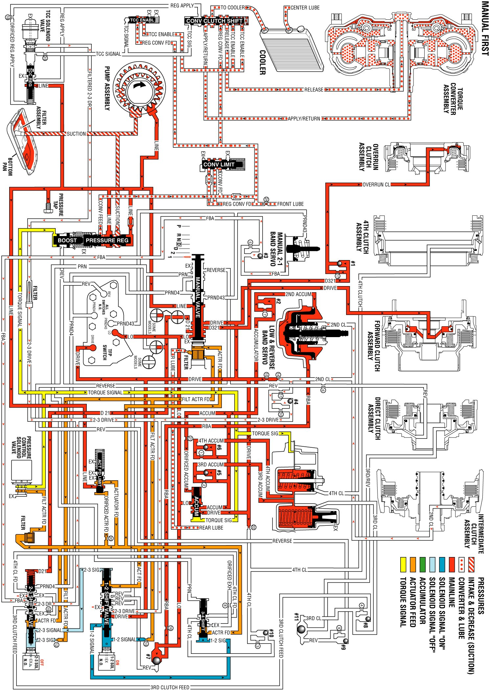

Manual First Gear
Manual First Gear
Use Manual First for maximum engine braking when the car is descending steep grades. Select Manual First at any vehicle speed. However, the transmission will first operate in Manual First - Second Gear condition until the vehicle speed slows sufficiently.
Manual Valve
In the Manual First range, line pressure from the pressure regulator valve is directed as Drive, D321, D21, and Lo fluid pressures. The Drive fluid pressure is directed to the automatic transmission fluid pressure (TFP) manual valve position switch assembly, the forward clutch, the 1-2 shift valve, and the accumulator valve. The D321 fluid pressure is directed to the overrun clutch. The D21 fluid pressure is directed to the 2-3 shift valve. The Lo fluid pressure is directed to the TFP manual valve position switch, accumulator valve, and the low reverse band servo.
Automatic Transmission Fluid Pressure (TFP) Manual Valve Position Switch Assembly
Lo fluid pressure from the manual valve is directed to the Lo pressure switch on the TFP manual valve position switch. This sends a signal to the Powertrain Control Module (PCM) that the transmission is in Manual First. Drive fluid pressure is also supplied to the TFP manual valve position switch.
1-2 Shift Solenoid (1-2 SS) Valve
When the 1-2 SS valve is energized, 1-2 signal fluid pressure forces the 1-2 and the 3-4 shift valves to the extreme left.
2-3 Shift Solenoid (2-3 SS) Valve
When the 2-3 SS valve is de-energized, 2-3 signal fluid pressure exhausts through the solenoid.
1-2 Shift Valve
1-2 signal fluid pressure holds the 1-2 shift valve to the extreme left. The actuator feed and the drive pressures supplied to the 1-2 shift valve are blocked.
2-3 Shift Valve
Spring pressure and the D21 fluid pressure from the manual valve hold the 2-3 Shift Valve to the extreme right.
3-4 Shift Valve
1-2 signal fluid pressure forces the 3-4 shift valve to the extreme left.
Low and Reverse Band Servo
Low fluid pressure from the manual valve is directed to the #7 checkball and to the low and reverse band servo, which applies the low and reverse band. Low fluid pressure changes to Rear Band Apply (RBA) fluid pressure at the checkball.
Forward Clutch
Drive fluid pressure from the manual valve, applies the forward clutch.
Overrun Clutch
The D321 fluid pressure from the manual valve seats the #1 checkball in the case. This causes the fluid to flow through an orifice, where the D321 fluid pressure changes into overrun fluid pressure. The overrun fluid pressure flows through the case and the pump housing, and into the overrun clutch housing, which applies the overrun clutch. The overdrive roller clutch becomes ineffective and provides vehicle engine compression braking.
Manual First Gear
